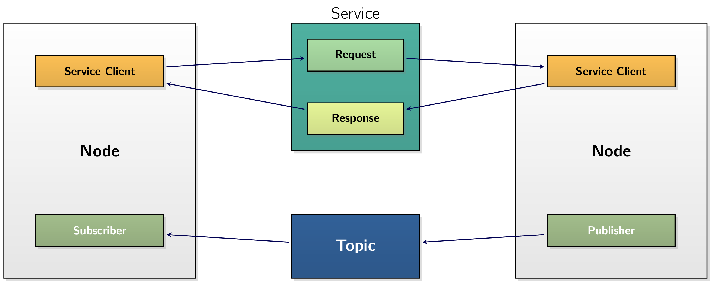

A node is just an actor in the overall ROSRobot Operating System 2Robot Operating System 2 graph,
which uses a client library [192]
This could either be rospy or roscpp depending on the chosen language. to
communicate with other nodes.
Nodes can also communicate with other nodes within the same process, in a different process, or on a different machine and are considered the unit of computation in a ROSRobot Operating System 2Robot Operating System 2 graph as each node should do one logical thing.
Nodes can either:
-
publish to named topics to deliver data to other nodes, or
-
subscribe to named topics to get data from other nodes.
They can also act as a service client to have another node perform a computation on their behalf, or as a service server to provide functionality to other nodes. [193] We will have a look at what a service is in just a bit.
For long-running calculations, a node can act as an action client to have another node perform it on their behalf, or as an action server to provide functionality to other nodes. Nodes can provide configurable parameters to change behaviour during run-time.
Nodes are often a complex combination of publishers, subscribers, service servers, service clients, action servers, and action clients, all at the same time.
An advantage of using nodes is that it allows language agnostic programming. It means we can write one node in Python, another node in C++, and both can communicate without any problem. In addition they provide a great fault tolerance. As nodes only communicate through ROSRobot Operating System 2Robot Operating System 2, they are NOT directly linked. If one node crashes, it will not make the other nodes crash. For all these actions to work, a node needs to know where others are. Therefore, to achieve this we use a method called a distributed discovery process.
Discovery of nodes happens automatically through the underlying middle-ware of ROSRobot Operating System 2Robot Operating System 2. The sequence of operations can be summarised as follows:
- i.
- When a node is started, it advertises its presence to other nodes on the network with
the same ROSRobot Operating System 2Robot Operating System 2 domain. [194]
This is set
with the
ROS_DOMAIN_IDenvironment variable which is used to isolate multiple ROSRobot Operating System 2Robot Operating System 2 systems from each other on the same network. Nodes respond to this advertisement with information about themselves so that the appropriate connections can be made and the nodes can communicate. - ii.
- Nodes periodically announce their presence so connections can be made with new-found entities, even after the initial discovery period.
- iii.
- Nodes advertise to other nodes when they go offline.
Nodes will only establish connections with others having compatible Quality of Service. [195] In this context it means the description or measurement of the overall performance of a service, such as a telephony or computer network, or a cloud computing service, particularly the performance seen by the users of the network.
As an example to see whats going on let’s used the built-in example called talker-listener . As the name implies, one
node advertises the presence and the other listens.
bash
[INFO] [1748930700.789182596] [talker]: Publishing: 'Hello World: 1'
[INFO] [1748930701.785043679] [talker]: Publishing: 'Hello World: 2'
[INFO] [1748930702.785231597] [talker]: Publishing: 'Hello World: 3'
[INFO] [1748930703.785897764] [talker]: Publishing: 'Hello World: 4'
Now it is running in one, open another terminal window, and type:
bash
[INFO] [1748930759.815469762] [listener]: I heard: [Hello World: 60]
[INFO] [1748930760.787999512] [listener]: I heard: [Hello World: 61]
[INFO] [1748930761.787663179] [listener]: I heard: [Hello World: 62]
[INFO] [1748930762.787127847] [listener]: I heard: [Hello World: 63]
Running the C++ talker node in one terminal will publish messages on a topic, and the Python listener node running in another terminal will subscribe to messages on the same topic.
We should see that these nodes discover each other automatically, and begin to exchange messages.
Description
ROSRobot Operating System 2Robot Operating System 2 applications generally communicate through interfaces of one of three (3) types:
ROSRobot Operating System 2Robot Operating System 2 uses a simplified description language [196] interface definition language. to describe these interfaces. This description allows simplification for ROSRobot Operating System 2Robot Operating System 2 tools to automatically generate source code for the interface type in several target languages. [197] i.e., Python, C++ Here we will look at the following supported types:
-
msg(.msg) -
simple text files describing the fields of a ROSRobot Operating System 2Robot Operating System 2 message. They are used to generate source code for messages in different languages.
-
srv(.srv) -
describes a service and composed of two (2) parts:
a request, and a response.The request and response are message declarations.
-
action(.action) -
describes actions and composed of three (3) parts:
a goal, a result, and a feedback.Each part is a message declaration itself.
Messages
Messages are a way for a ROSRobot Operating System 2Robot Operating System 2 node to send data on the network to other ROSRobot Operating System 2Robot Operating System 2 nodes, without expecting any responses.
Temperature message. Other nodes on the ROSRobot Operating
System 2Robot Operating System 2 network can subscribe to that data and receive the Temperature message.
Messages are described and defined in .msg files in the msg/ directory of a ROSRobot Operating System
2Robot Operating System 2 package.
Primarily, .msg files are composed of two (2) parts:
- Fields
-
Information about a data type and its name.
- Constants
-
Similar to other languages, define an unchangeable variable.
Fields Each field consists of a type and a name, separated by a space. The syntax for this would be the following:
text
As an example, let’s say we want to define a -bit integer and a string variable. If we want to implement this, we would have to write the following:
text
Field Types As with most statically-typed languages [198] This means the variable’s type is known at compile-time (before the program runs). Here, we declare explicitly the variable type while we are typing our program rather than letting the compiler figure out the type based on how it is used. we need to define what type of variables we are working. In ROSRobot Operating System 2Robot Operating System 2, the fields type can be one of two (2) things:
-
A built-in type,
-
names of Message descriptions defined on their own, such as
geometry_msgs/PoseStamped
The following is a table of all currently built-in variable types.
| Type name | C++ | Python | DDS type | |||||||||||
bool | bool | builtins.bool | boolean | |||||||||||
byte | uint8_t | builtins.bytes* | octet | |||||||||||
char | char | builtins.int* | char | |||||||||||
float32 | float | builtins.float* | float | |||||||||||
float64 | double | builtins.float* | double | |||||||||||
int8 | int8_t | builtins.int* | octet | |||||||||||
uint8 | uint8_t | builtins.int* | octet | |||||||||||
int16 | int16_t | builtins.int* | short | |||||||||||
uint16 | uint16_t | builtins.int* | unsigned short | |||||||||||
int32 | int32_t | builtins.int* | long | |||||||||||
uint32 | uint32_t | builtins.int* | unsigned long | |||||||||||
int64 | int64_t | builtins.int* | long long | |||||||||||
uint64 | uint64_t | builtins.int* | unsigned long long | |||||||||||
string | std::string | builtins.str | string | |||||||||||
wstring | std::u16string | builtins.str | wstring | |||||||||||
In addition, array-like feature are also supported
| Type name | C++ | Python | DDS type | |||||||||||
static array | None | builtins.list* | T[N] | |||||||||||
unbounded dynamic array | std::vector | builtins.list | sequence | |||||||||||
bounded dynamic array | None | builtins.list* | None | |||||||||||
bounded string | std::string | builtins.str* | string | |||||||||||
All types which are more permissive than their ROSRobot Operating System 2Robot Operating System 2 definition enforce the ROSRobot Operating System 2Robot Operating System 2 constraints in range and length by software.
Example of message definition using arrays and bounded types:
text
There are some restrictions in how these variables are named and therefore are worth of mention. Field names must be lowercase alphanumeric characters with underscores for separating words. They must start with an alphabetic character, and they must NOT end with an underscore or have two (2) consecutive underscores.
Default Values Default values can be set to any field in the message type. Currently default values are NOT supported for string arrays and complex types. [199] types NOT present in the built-in-types which applies to all nested messages.
Defining a default value is done by adding a third element to the field definition line. For example:
text
An example implementation would be:
text
For example, in the first line we define a 8-bit unsigned integer (uint8 ), call it
, and give it a
default value of .
String values must be defined in ' or " quotes and currently string values are NOT escaped.
Constant Values
Each constant definition is like a field description with a default value, except that this value can never be
changed programmatically. This value assignment is indicated by use of an equal (= ) sign. The
syntax is:
text
For example:
text
Constants names have to be UPPERCASE.
Services
Services are a request/response communication, where the client, i.e., requester, is waiting for the
server, called responder, to make a short computation and return a result. Services are described and
defined in .srv files in the srv directory of a ROSRobot Operating System 2Robot Operating System 2
package.
A service description file consists of a request and a response msg type, separated by --- . Any two .msg files
concatenated with a --- are a legal service description.
Here is a very simple example of a service that takes in a string and returns a string:
text
We can of course get much more complicated: [200] If we want to refer to a message from the same package we must NOT mention the package name.
text
We cannot embed another service inside of a service.
Actions
Actions are a long-running request/response communication, where the action client, requester, is waiting for the action server, the responder, to take some action and return a result. In contrast to services, actions can be long-running, [201] This could be many seconds up to minutes. provide feedback while they are happening, and can be interrupted.
Action definitions have the following form:
text
Similar to services, the request fields are before and the response fields are after the first triple-dash (--- ),
respectively. There is also a third set of fields after the second triple-dash, which is the fields to be sent
when sending feedback. There can be:
-
arbitrary numbers of request fields (including zero),
-
arbitrary numbers of response fields (including zero), and
-
arbitrary numbers of feedback fields (including zero).
The None , None , and None follow all of the same rules as the None for a message.
The None , None , and None follow all of the same rules as the None for a message.
As an example, the Fibonacci action definition contains the following:
text
This is an action definition where the action client is sending a single int32 field representing the number of
Fibonacci steps to take, and expecting the action server to produce an array of int32 containing the
complete steps. Along the way, the action server may also provide an intermediate array of int32 contains
the steps accomplished up until a certain point.
Topics are one of the three (3) primary styles of interfaces provided by ROSRobot Operating System 2Robot Operating System 2. Topics should be used for continuous data streams, like sensor data, robot state, etc. As stated earlier, ROSRobot Operating System 2Robot Operating System 2 is a strongly-typed, anonymous publish/subscribe system. Let’s break down that sentence and explain it a bit more.
Publisher - Subscriber Architecture
While we have looked at this topic previously, we looked at it from a more general point-of-view. Here we will focus our attention on its implementation to the ROSRobot Operating System 2Robot Operating System 2. A publish/subscribe system is one in which there are:
- 1.
- producers of data which are called publishers,
- 2.
- consumers of data which are called subscribers.
The publishers and subscribers know how to contact each other through the concept of a topic, which is a common name so that the entities can find each other.
When we create a publisher, we must also give it a string which is the name of the topic and the same goes for the subscriber.
Any publishers and subscribers which are on the same topic name can directly communicate with each other. There may be zero (0) or more publishers and zero or more subscribers on any particular topic. When data is published to the topic by any of the publishers, all subscribers in the system will receive the data.
This system is also known as a bus as it resembles a bus bar from used in power engineering. This concept
of a bus is part of what makes ROSRobot Operating System 2Robot Operating System 2 a powerful
and flexible system. Publishers and subscribers can come and go as needed, meaning that debugging
and introspection are natural extensions to the system.
As an example, if we want to record data, we can use the ros2 bag record command. Under the hood, ros2 bag record creates a new
subscriber to whatever topic we tell it, without interrupting the flow of data to the other parts of the
system.
Anonymity
Another fact mentioned in the introduction is that ROSRobot Operating System 2Robot Operating System 2 is anonymous. This means that when a subscriber gets a piece of data, it doesn’t generally know or care which publisher originally sent it. [202] If needed though, it can find out. The benefit to this architecture is that publishers and subscribers can be swapped out at will without affecting the rest of the system.
Strongly-Typed
As a last point, the publish/subscribe system is strongly-typed. That has two (2) meanings in this context:
-
The types of each field in a ROSRobot Operating System 2Robot Operating System 2 message are typed, and that type is enforced at various levels. For instance, if the ROSRobot Operating System 2Robot Operating System 2 message contains:
text
-
Then the code will ensure the
field1is always an unsigned integer andfield2is always a string. -
The semantics of each field are well-defined.
-
There is no automated mechanism to ensure this, but all of the core ROSRobot Operating System 2Robot Operating System 2 types have strong semantics associated with them.
-
For instance, the IMU message contains a 3-dimensional vector for the measured angular velocity, and each of the dimensions is specified to be in radians/second. Other interpretations should NOT be placed into the message.
-
In ROSRobot Operating System 2Robot Operating System 2, a service refers to a remote procedure call. In other words,
This structure is reflected in how a service message definition looks:
text
In ROSRobot Operating System 2Robot Operating System 2, services are expected to return quickly, as the client is generally waiting on the result. Services should never be used for longer running processes, in particular processes that might need to be pre-empted for exceptional situations.
If we have a service that will be doing a long-running computation, consider using an action.
Services are identified by a service name, which looks much like a topic name. [203] but is in a different namespace. A service consists of two (2) parts:
Service Server
A service server is the entity that will accept a remote procedure request, and perform some computation on it. For instance, suppose the ROSRobot Operating System 2Robot Operating System 2 message contains the following:
text
The service server would receive this message, adds a and b together, and returns the sum .
There should only be one (1) service server per service name. It is undefined which service server will receive client requests in case of multiple service servers on the same service name.
Service Client
A service client is an entity that will request a remote service server to perform a computation on its
behalf. Following the previous example, the service client is the entity that creates the initial
message containing a and b , and waits for the service server to compute the sum and return the
result.
Unlike service server, there can be a number of service clients using the same service name.
In ROSRobot Operating System 2Robot Operating System 2, an action refers to a long-running remote procedure call with feedback and the ability to cancel or pre-empt the goal.
This structure is reflected in how an action message definition looks:
text
In ROSRobot Operating System 2Robot Operating System 2, actions are expected to be long running procedures, as there is overhead in setting up and monitoring the connection.
If we need a short running remote procedure call, consider using a service instead.
Actions are identified by an action name , which looks much like a topic name (but is in a different namespace) and
consists of two (2) parts:
- i.
- the action server,
- ii.
- the action client.
Action Server
The action server is the entity that will accept the remote procedure request and perform some procedure on it. It is also responsible for sending out feedback as the action progresses and should react to cancellation/preemption requests.
For instance, consider an action to calculate the Fibonacci sequence with the following interface we looked at previously:
text
The action server is the entity that receives this message, starts calculating the sequence up to order, [204] providing feedback along the way. and finally returns a full result in sequence.
There should only ever be one action server per action name. It is undefined which action server will receive client requests in the case of multiple action servers on the same action name.
Action Client
An action client is an entity that will request a remote action server to perform a procedure on its behalf. Following the previous example, the action client is the entity that creates the initial message containing the order, and waits for the action server to compute the sequence and return it (with feedback along the way).
Unlike action server, there can be a number of action clients using the same action name.
Parameters in ROSRobot Operating System 2Robot Operating System 2 are associated with individual nodes. Parameters are used to configure nodes at startup, and during runtime without changing the code. The lifetime of a parameter is tied to the lifetime of the node. [205] though the node could implement some sort of persistence to reload values after restart. Parameters are addressed by node name, node namespace, parameter name, and parameter namespace.
Providing a parameter namespace is optional.
Each parameter consists of a key, a value, and a descriptor. The key is a string and the value is one of the following types:
bool , int64 , float64 , string , byte[] , bool[] , int64[] , float64[] or string[] . By default all descriptors are empty, but can contain parameter descriptions, value ranges, type information, and additional constraints.
A Detailed Look
Declaring Parameters By default, a node needs to declare all of the parameters that it will accept during its lifetime.
We do this so the type and name of the parameters are well-defined at node startup time, which reduces the chances of misconfiguration later on.
For some types of nodes, not all of the parameters will be known ahead of time. In these cases, the node can be instantiated with allow_undeclared_parameters set to true , which will allow
parameters to be get and set on the node even if they haven’t been declared.
Types of Parameters Each parameter on a ROSRobot Operating System 2Robot Operating System 2 node has one of the pre-defined parameter types as mentioned.
By default, any attempts to change the type of a declared parameter at runtime will fail. This prevents common mistakes, such as putting a boolean value into an integer parameter.
If a parameter needs to be multiple different types, and the code using the parameter can handle it, this
default behaviour can be changed. When the parameter is declared, it should be declared using a ParameterDescriptor with
the dynamic_typing member variable set to true .
Parameter Callbacks A ROSRobot Operating System 2Robot Operating System 2 node can register two (2) different types of callbacks to be informed when changes are happening to parameters. Both of the callbacks are optional.
- set parameter callback
-
set by calling from the node APIApplication-Programming InterfaceApplication-Programming Interface, [206] A way for two or more computer programs or components to communicate with each other. It is a type of software interface, offering a service to other pieces of software.
add_on_set_parameters_callback. The callback is passed a list of immutableParameterobjects, and returns anrcl_interfaces/msg/SetParametersResult.
The primary purpose of set parameter callback is to give the user the ability to inspect the upcoming change to the parameter and explicitly reject the change.
It is important to make sure that set parameter callbacks have no side-effects. Since multiple set parameter callbacks can be chained, there is no way for an individual callback to know if a later callback will reject the update. If the individual callback were to make changes to the class it is in, for instance, it may get out-of-sync with the actual parameter. To get a callback after a parameter has been successfully changed, we may need to look into the lower option.
- on parameter event callback
-
set by calling
on_parameter_eventfrom parameter client APIApplication-Programming InterfaceApplication-Programming Interfaces. The callback is passed anrcl_interfaces/msg/ParameterEventobject, and returns nothing. This callback will be called after all parameters in the input event have been declared, changed, or deleted.
The primary purpose of on parameter event callback is to give the user the ability to react to changes from parameters that have successfully been accepted.
Parameter Interaction
ROSRobot Operating System 2Robot Operating System 2 2 nodes can perform parameter operations through node APIApplication-Programming InterfaceApplication-Programming Interfaces. External processes can perform parameter operations via parameter services that are created by default when a node is instantiated. The services that are created by default are:
-
node_name/describe_parameters: Uses service typercl_interfaces/srv/DescribeParameters. Given a list of parameter names, returns a list of descriptors associated with the parameters. -
node_name/get_parameter_types: Uses service typercl_interfaces/srv/GetParameterTypes. Given a list of parameter names, returns a list of parameter types associated with the parameters. -
node_name/get_parameters: Uses service typercl_interfaces/srv/GetParameters. Given a list of parameter names, returns a list of parameter values associated with the parameters. -
node_name/list_parameters: Uses service typercl_interfaces/srv/ListParameters. Given an optional list of parameter prefixes, returns a list of the available parameters with that prefix. If the prefixes are empty, returns all parameters. -
node_name/set_parameters: Uses service typercl_interfaces/srv/SetParameters. Given a list of parameter names and values, attempts to set the parameters on the node. Returns a list of results from trying to set each parameter; some of them may have succeeded and some may have failed. -
node_name/set_parameters_atomically: Uses service typercl_interfaces/srv/SetParametersAtomically. Given a list of parameter names and values, attempts to set the parameters on the node. Returns a single result from trying to set all parameters, so if one failed, all of them failed.
Some additional information regarding parameters are as follows:
Setting Initial Parameters Values when a Node is Running Initial parameter values can be set when running the node either through individual command-line arguments, or through YAML files.
.yaml Format A human-readable data serialization language. It is commonly used for configuration files and in applications where data is being stored or transmitted. Stands for YAML Ain’t Markup Language.
Setting Initial Parameters Values when a Node is Launching Initial parameter values can also be set when running the node through the ROS 2 launch facility.
Manipulating parameter values at runtime
The ros2 param command is the general way to interact with parameters for nodes that are already running. ros2 param
uses the parameter service APIApplication-Programming InterfaceApplication-Programming Interface
as described above to perform the various operations.
ROSRobot Operating System 2Robot Operating System 2 2 includes a suite of command-line tools for
introspecting a ROSRobot Operating System 2Robot Operating System 2 2 system.
The main entry point for the tools is the command ros2 , which itself has various sub-commands for
introspecting and working with nodes, topics, services, and more.
To see all available sub-commands run:
bash
usage: ros2 [-h] [--use-python-default-buffering] Call `ros2 <command> -h` for more detailed usage. ...
ros2 is an extensible command-line tool for ROS 2.
options:
-h, --help show this help message and exit
--use-python-default-buffering
Do not force line buffering in stdout and instead use the python default buffering, which might be affected by PYTHONUNBUFFERED/-u and depends on whatever stdout is interactive or
not
Commands:
action Various action related sub-commands
bag Various rosbag related sub-commands
component Various component related sub-commands
daemon Various daemon related sub-commands
doctor Check ROS setup and other potential issues
interface Show information about ROS interfaces
launch Run a launch file
lifecycle Various lifecycle related sub-commands
multicast Various multicast related sub-commands
node Various node related sub-commands
param Various param related sub-commands
pkg Various package related sub-commands
run Run a package specific executable
security Various security related sub-commands
service Various service related sub-commands
topic Various topic related sub-commands
wtf Use `wtf` as alias to `doctor`
Call `ros2 <command> -h` for more detailed usage.
ROS 2 Daemon: Background Discovery Service
ROSRobot Operating System 2Robot Operating System 2 2 uses a DDSData Distribution ServiceData
Distribution Service for nodes to connect to each other. As this process purposefully does NOT use a
centralized discovery mechanism, it can take time for ROS nodes to discover all other participants in
the ROSRobot Operating System 2Robot Operating System 2 graph. To address this, ROS 2 runs a
background daemon process that maintains information about the ROS graph to provide faster
responses to queries, such as the list of node names.
The ROS 2 daemon is automatically started when on the first use of command-line tools like ros2 node list , ros2 topic list , or
other introspection commands.
If no daemon is running, these tools will instantiate a new daemon process in the background before executing the requested command.
The daemon communicates using the localhost network interface (127.0.0.1 ) and uses the ROS_DOMAIN_ID environment
variable as a port number offset. This means that if you want to control a specific daemon instance
(for example, using ros2 daemon stop ), you must ensure that your ROS_DOMAIN_ID matches the domain ID used by that
daemon. Different ROS_DOMAIN_ID values will result in separate daemon instances running on different
ports.
You can run ros2 daemon --help for more options for interacting with the daemon, including commands to
start, stop, or check the status of the daemon process.
A ROS 2 system typically consists of many nodes running across many different processes. [207] and even different machines While it is possible to run each of these nodes separately, it gets cumbersome quite quickly.
The launch system in ROS 2 is meant to automate the running of many nodes with a single command. It helps the user describe the configuration of their system and then executes it as described. The configuration of the system includes what programs to run, where to run them, what arguments to pass them, and ROS-specific conventions which make it easy to reuse components throughout the system by giving them each a different configuration. It is also responsible for monitoring the state of the processes launched, and reporting and/or reacting to changes in the state of those processes.
All of the above is specified in a launch file, which can be written in Python, XML, or YAML. This
launch file can then be run using the ros2 launch command, and all of the nodes specified will be
run.
-
¶
- DDSData Distribution Service
Data Distribution Service
-
¶
- APIApplication-Programming Interface
Application-Programming Interface
-
¶
- ROSRobot Operating System 2
Robot Operating System 2
- [192].
- This could either be
rospyorroscppdepending on the chosen language.
- [193].
- We will have a look at what a service is in just a bit.
- [194].
- This is set
with the
ROS_DOMAIN_IDenvironment variable which is used to isolate multiple ROSRobot Operating System 2Robot Operating System 2 systems from each other on the same network.
- [195].
- In this context it means the description or measurement of the overall performance of a service, such as a telephony or computer network, or a cloud computing service, particularly the performance seen by the users of the network.
- [196].
- interface definition language.
- [197].
- i.e., Python, C++
- [198].
- This means the variable’s type is known at compile-time (before the program runs). Here, we declare explicitly the variable type while we are typing our program rather than letting the compiler figure out the type based on how it is used.
- [199].
- types NOT present in the built-in-types which applies to all nested messages.
- [200].
- If we want to refer to a message from the same package we must NOT mention the package name.
- [201].
- This could be many seconds up to minutes.
- [202].
- If needed though, it can find out.
- [203].
- but is in a different namespace.
- [204].
- providing feedback along the way.
- [205].
- though the node could implement some sort of persistence to reload values after restart.
- [206].
- A way for two or more computer programs or components to communicate with each other. It is a type of software interface, offering a service to other pieces of software.
- [207].
- and even different machines